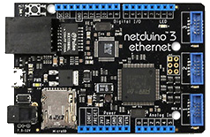
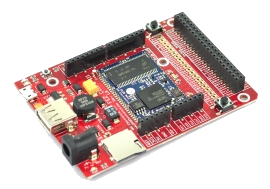

Sommaire
- LE MATERIEL
- L'afficheur LCD 2 x 16 caractères à commandes séries
- Les cartes Netduino
- Les cartes FEZ
- LE LOGICIEL
1. LE MATERIEL
1.1 L'afficheur LCD 2 x 16 caractères à commandes séries
- Présentation
- Alimentation: 5V
- Commande : liaison série asynchrone 8 bits - sans parité - 1 bit de stop - débit binaire 19200b/s ou 4800 b/s
- Dimensions: 80mm x 36mm
- Documentation : Comfile ELCD162
- Distributeur: Lextronic
Cet afficheur LCD "OEM" à commandes séries est composé d'un afficheur LCD standard associé à une platine pouvant être commandée par un microcontrôleur au moyen d'ordres transmis en série (8 bits - sans parité - 1 bit de stop - débit binaire 19200b/s ou 4800 b/s). L'afficheur (à processeur Hitachi) dispose d'un réglage de contraste au moyen d'un potentiomètre présent sur la platine de commande.

1.2 Les cartes Netduino
Secret Labs
- Microcontrôleur : STM32F405RG 32 bits à architecture Cortex-M4 cadencé à 168 MHz.
- RAM : 164KB+.
- Flash : 1408KB.
- Port Ethernet : 10/100Mbps (Wifi:802.11b/g/n)*.
- E/S numériques : 22
- Entrées analogiques : 6
- Stockage: carte µSD
- IDE : Microsoft Visual Studio
- Framework : .NETMF 4.3
- Langages de programmation : C#, VB
- Compatibilité : shield Arduino, Gadgeteer
|  |  |
| Netduino 3 Ethernet | Netduino 3 wifi* |
- Sites à consulter : Netduino, NETMF
- Distributeurs : Mouser Electronics
1.3 Les cartes FEZ
GHI Electonics (Extrait)
- Microcontrôleur : 180 MHz 32-bit ARM Cortex-M4.(120 MHz 32-bit ARM Cortex-M3 )*
- SoC(SoM)* : G80 G120*
- RAM : 156 KB(2.87 MB)*.
- Flash : 256 KB (13.67 MB)*.
- E/S numériques : 53(60)*
- Entrées analogiques : 16(8)*
- Réseaux : Ethernet TCP/IP, WiFi, and SSL.
- Stockage: carte µSD
- IDE : Microsoft Visual Studio
- Framework : .NETMF 4.3
- Langages de programmation : C#, VB
 |
 |
| PANDA III | COBRA III* (compatible Gadgeteer) |
- Sites à consulter : GHI ELECTRONICS, NETMF
- Distributeurs : Mouser Electronics
2. LE LOGICIEL
2.1 Contenu du répertoire proposé au téléchargement
Le répertoire proposé au téléchargement (au format zip ou tar.gz) contient la solution NetduinoELCD162 composée :
- Du projet ELCD162 : le code source de la classe ELCD162.
- Du projet TestELCD_162 : un exemple d'utilisation de cette classe.
2.2 Le NuGet MicroToolsKit
La dernière version La dernière version compilée de la classe ELCD162 se situe dans la bibliothèque MicroToolsKit disponible sur nuget.org.

Organisation des classes contenues dans MicroToolsKit [lien]
Installer cette bibliothèque dans le projet simplifie l'utilisation de cette classe.
2.3 Les Wikis
- Fascicules d'exemples de code pour les cartes Netduino. [lien]
- Fascicule d'exemples de code pour les cartes FEZ. [lien]
2.4 Description et utilisation de la classe ELCD162
- Rôle: Contrôler un afficheur lcd à commande série (type RS232).
- Assembly à ajouter dans les références de l'explorateur de solution:
- MicroToolsKit (disponible sur nuget.org)
- Microsoft.SPOT.Hardware.SerialPort disponible si NETMF V4.3 est installé
- Espace de noms à rajouter dans le code source: Microtoolskit.Hardware.Displays
Création d'un projet avec l'IDE Visual Studio
- Utiliser le gestionnaire de paquets NuGet pour ajouter l'assembly MicroToolsKit (disponible sur nuget.org) dans le répertoire Références du projet.(clic droit sur Références puis Gérer les packages NuGet...)
- Ajouter l'espace de noms Microtoolskit.Hardware.Displays dans l'en-tête du fichier source.
- Créer un objet en utilisant un des constructeurs ELCD162.
- Initialiser le LCD avec la méthode Init.
- Transmettre les chaînes de caractères avec la méthode PutString
Exemple
float valeur = 0;ELCD162 lcd = new ELCD162();
Lcd.Init(); Lcd.ClearScreen(); Lcd.CursorOff();
while(true)
{
valeur = valeur + 0.11;
lcd.PutString("Temperature = " + valeur.Tostring("F1"));
Thread.Sleep(100);
}
Constructeurs
| Syntaxe | Description | |
 |
ELCD162() |
Instancie un objet "Afficheur LCD série" avec les paramètres: COM2, 19200b/s, pas de parité, 8bits, 1 bit de stop. Exemple ELCD162 lcd = new ELCD162(); |
|
ELCD162(string com, int baudrate, Parity parite, int bits, StopBits stopb) | Instancie un objet "Afficheur LCD série" avec des paramètres de communication personalisés .
|
Méthodes publiques
| Syntaxe | Description | |
|
void ClearScreen() |
Efface le LCD et positionne le curseur en (0,0). Exemple lcd.ClearScreen(); |
|
void CursorOff() |
Désactivation du curseur. Exemple lcd.CursorOff(); |
|
void CursorOn() |
Activation du curseur. Exemple lcd.CursorOn(); |
|
void Init() | Initialisation de l'afficheur. Toute première méthode à appliquer ! Exemple lcd.Init(); |
|
void PutString(string text) |
Transmet une chaîne de caractères au LCD. text: chaîne de caractères codés conformément à la table du processeur HD44780 Exemple 1 lcd.PutString("Afficheur"); Exemple 2 lcd.PutString("Temperature = " + valeur.Tostring("F1")); |
|
void SetCursor(byte x, byte y) |
Place le curseur à la position définie par x (0 à 19 suivant le nombre de caractères de l'écran)
et y (0 à 3 suivant le nombre de lignes). Si x=0 et y=0 le curseur sera situé en haut à gauche de l'écran. Exemple lcd.SetCursor(0,1); // Curseur sur le premier caractère de la deuxième ligne. |